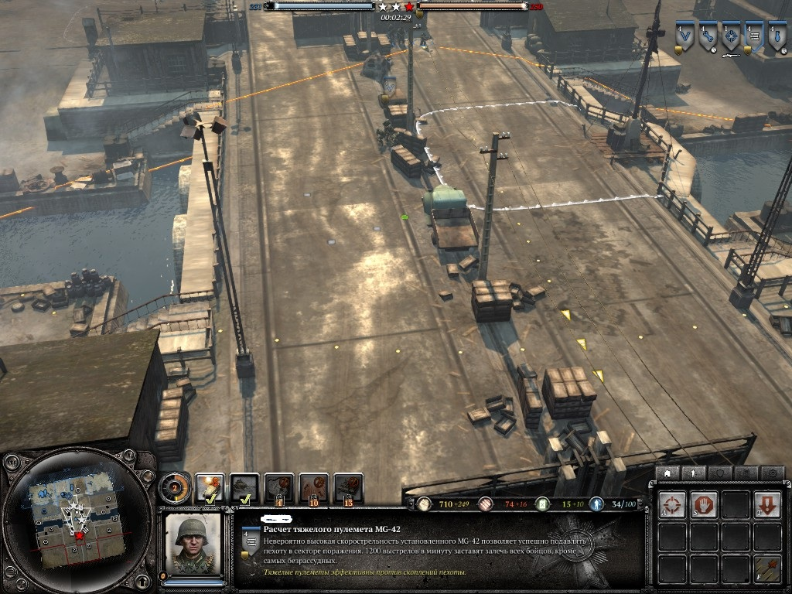

Руководство по обороне для игроков среднего уровня.
В этом разделе я хочу рассказать об составляющих обороны. Так как из малого строится большое.
[ Пункт А]
И первый юнит на котором строится любая организованная оборона-это пулемёт. Да, без него никак. Особенностью этого юнита является то, что он через несколько секунд после начала стрельбы а иногда и сразу(зависет он типа)начинает подавлять пехоту противника. Подавленная пехота начинает перемешаться ползком и самое важное, ей начинает наносится повышенный урон. Через несколько секунд, как правило, отряд противника подавляется полностью и в этом состояние юниты нечего не могут сделать кроме как отступить. Хочется акцентировать внимание на том, что многие игроги,даже проведя сто часов в игре не замечают. Это радиус обзора и поражения. Думаете они одинаковы? А вот и нет =D

Для наглядности я обвёл радус обзора и поражения разными цветами. На этой картины хорошо видно различие. В зоне помеченной красными линиями, как вы видите может расположится целый отряд. Хочется отменить, что это не косается тех,кто сидит в здание. Вы уже догадались чем это грозит вам? Надеюсь да. Как же исправить такую вот проблему. Всё просто. Ставим отряд обычной пехоты впереди пулемёта.
[Пункт Б]
Второй юнит, от которого зависит судьба обороны-это ПТО(Противотанковое орудие). Если против пехоты и даже быть может легкой техники пулемёт будет эффективен то вот броня танков ему будет не по зубам. И тут в игру входит ПТО. Оно так же как и пулемёт имеет большой радиус стрельбы но радиус обзора гораздо ниже. Конечно же ПТО в отличии от пулемёта не столь незаменимо и при желание можно заменить на противотанковое оружие пехоты либо на танк. Но именно ПТО наносит стабильный всегда высоких урон.
[Пункт В]
И следующие, третье, по списку но не по значению, пехота-костяк и основа любой обороны. Что-же о ней можно рассказать? Ну первое, её надо размещать впереди всех. А во-вторых, всегда следите чтобы ваши солдаты были в укрытии, так как из-за этого зависит их живучесть.
[Пункт Г]
Ну и на последок хочу добавить про участки, которые не заняты вашими войсками и по ним может пройти противник. Что нужно для предотвращения обхода противником? Мины. Многие новички совершают ошибку делая заграждения из колючей проволки и противотанковых ежей. Это не правильно. Эти укрепления особо не замедлят опытного противника а мины нанесут урон противнику и ему придётся отступить ,давая вам время для укрепления позиции.
Теперь когда мы обговорили основы и составляющие обороны, хочется задаться вопросом.Как продуктивно использовать все части в одном целом? А будем мы отходить от всего того же радиуса обзора и поражения войск и для начала, снова поделим раздел на несколько подпунктов.
Теперь, когда мы обговорили всё, проведём типичную ситуацию. Противник начинает атаку. Сперва он нанесёт удар артиллерией и авиоударами. Он наносится по известным им позициям. То бишь первый эшелон. Для сохранения отрядов отводим юнитов ко второму эшелону. Как только прекращается огонь, возвращаемся на исходные позиции. Следующие что делает враг, он наносит комбинируешей удар пехотой и танками. Против пехоты идёт пулемёт а танки бьёт ПТО. Ко всему этому подходят ваши танки и добивают отступающие войска. Многие сейчас начнут возмущаться,мол это всё? Так легко?! Конечно же нет. Это лишь симуляция боя и наилучшая, универсальная тактика, её фундамент, для продотвращение прорыва.